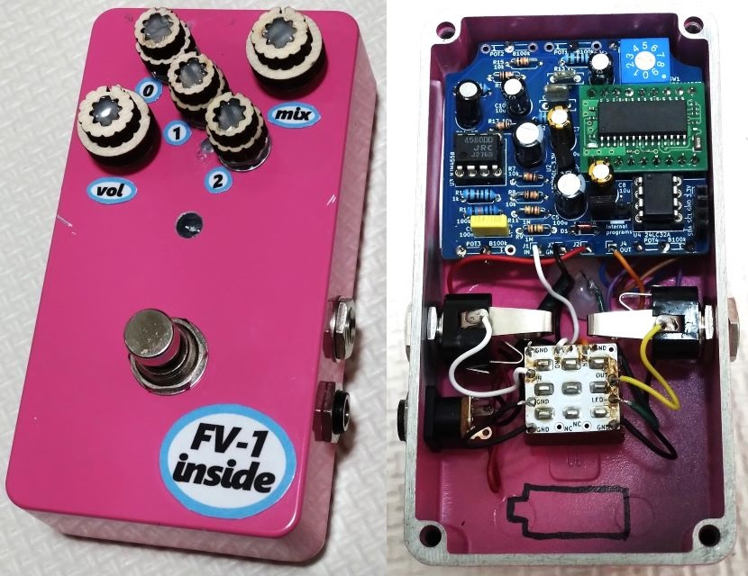
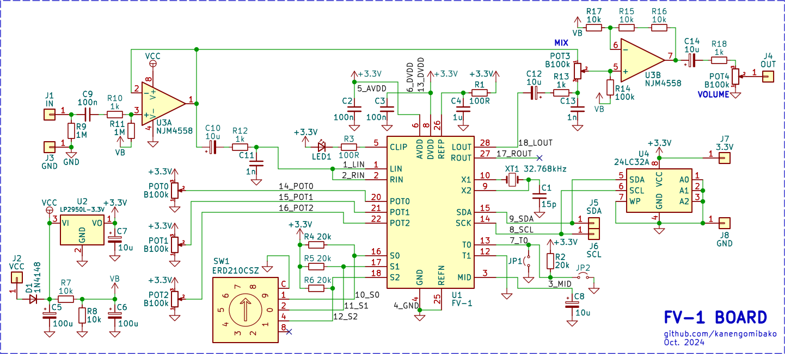
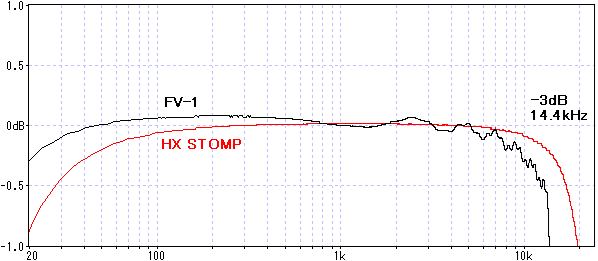
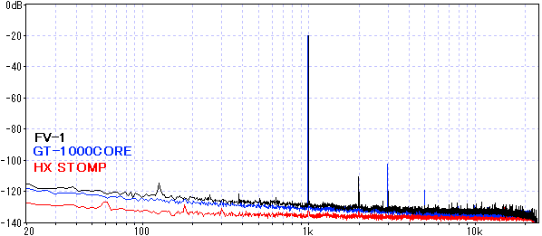
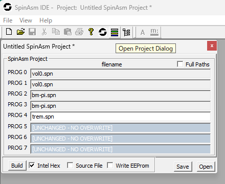
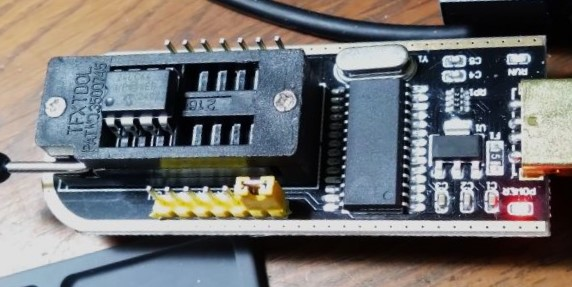
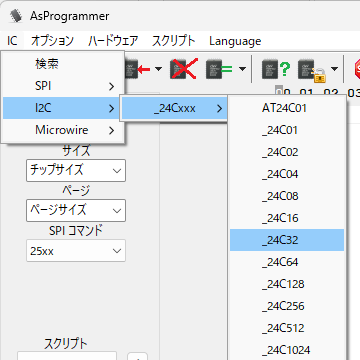
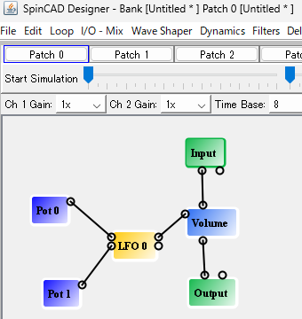

FV-1 デジタルエフェクター
2024年10月25日 カテゴリー：自作エフェクター（アナログ）

Spin Semiconductor SPN1001 FV-1は2007年頃から使われているリバーブICです。空間系エフェクターの自作に使ってみたいという方がいらっしゃると思うので、私も一度作ってみることにしました。データシートにはリバーブと書いてありますが、様々なデジタル信号処理が可能です。カテゴリーは便宜上「自作エフェクター（アナログ）」にしています。
2024年10月時点では、秋月電子でFV-1を入手できます。FV-1単体（2480円）よりDIP化モジュールキット（1480円）の方が安いので、モジュールの方を利用することにしました。次のロットからはFV-1単体より高くなるのかもしれません。
内部写真では正論理のロータリースイッチが使ってありますが、本来は負論理のものがよいです。また、ヘッドフォン駆動に有利なようにオペアンプをNJM4580にしています。
▽回路図（KiCadデータはこちらへ）

PedalPCBのFV-1 Development PCBを簡略化したものとなっています。FV-1周辺の部品はモジュール上に実装されているので、実際のパーツ数は少ないです。MIXが最大でも原音側がわずかに混ざるので、気になる場合はバッファを追加するか、R13・C13のローパスフィルターを省いてもよいでしょう。
モジュール基板裏側のジャンパーはアクセスしづらいので、別途ピンヘッダを用意しました。ここにジャンパーピンをつけると内部プリセットプログラムが読み込まれます。何もつけない場合、EEPROMというメモリーに保存されたプログラムが読み込まれます。24LC32Aは、秋月電子に取り扱いがあるAT24C32Eや24LC64で代用できるようです。EEPROMにプログラムを書き込む方法については後述します。
1回路8接点以上のロータリースイッチでエフェクトを切り替える場合、Arachnid MultiFX Platformのようにダイオードを使います。秋月電子のFV-1モジュールではS0～S2ピンがプルアップ抵抗を介して電源に接続されているので、ロータリースイッチのコモン端子をグラウンドに接続し、ショットキーダイオードを使うとよいと思います。
・周波数特性 ※±1dBに拡大

サンプリング周波数が32.768kHzなので、帯域幅が少し狭くなります。基本的に原音はアナログでミックスするので問題ないでしょう。
水晶振動子を交換し、サンプリング周波数をもっと高くすることもできます。ただ48kHzの水晶振動子は流通していないようで、追加の回路が必要です（詳細：The FV-1 Crystal Oscillator）。
・正弦波 約1kHz

SN比はそこまで悪くないものの、ハイゲインなエフェクト処理をするのには向いていないかと思います。レイテンシーは、約1.5msでした。
【外部エフェクト書き込み】
EEPROMにプログラムを書き込み、FV-1で実行できるようにします。下記参考ページとほぼ同じ内容をまとめています。
・HOME BAKE INSTRUMENTS REVERBS/EFFECTS 日本語説明書
- 開発環境 ※Windowsのみ対応
公式ページ下部のsoftware :: SpinAsm assembler for the SPN1001から、FV-1用プログラムの開発環境ソフトをダウンロード、インストールします。このソフトは管理者として実行する必要があるので、右クリック→『管理者として実行』とするか、プロパティ→互換性→『管理者としてこのプログラムを実行する』にチェックを入れておきます。
- エフェクトプログラムの準備
下記ページからエフェクトプログラム（spnファイル）をダウンロードします。
・FV-1 Programs
※多くのエフェクトでは原音をミックスして出力するのが前提となっています。
- hexファイル出力
インストールしたSpinAsm assemblerを管理者として実行します。横棒のマーク（Open Project Dialog）をクリックし開くウインドウで、それぞれの行をダブルクリックし書き込みたいspnファイルを選びます。

Intel Hexにチェックを入れBuildボタンを押すと、C:\Program Files (x86)\SpinAsm IDE\hexoutフォルダににhexファイルが出力されます。
- binファイルへ変換
hexファイルのままでは書き込みできないので、binファイルへ変換する必要があります。HOME BAKE INSTRUMENTSのFV1_HexToBinツールを利用すると簡単です。私の環境では、HexToBin.batと同じフォルダにhexファイルを置いてからドラッグ＆ドロップするとうまくいきました。
- 書き込み
CH341が搭載された書き込み機器（AmazonやAliExpress等で購入可能）を使います。書き込み用ソフトAsProgrammerをダウンロードし、driversフォルダ→CH34Xフォルダ内のCH34XPAR.EXEを実行してCH341のドライバーをインストールします。書き込み機をPCに接続し、EEPROMを下写真のようにセットしておきます。※EEPROMをFV-1の基板に搭載したまま、4・5・6ピン（GND・SDA・SCL）を接続して書き込むことも可能です。

Arduino等のマイコンを用いた書き込み方法もあるので、使いなれたマイコンがある方はそちらを検索してみてください。
AsProgrammerを起動し、書き込みするbinファイルを開きます。ICメニューから『_24C32』を選択し、IC書込ボタンを押すとすぐに書き込みが完了します。

EEPROMをFV-1の基板に移し、エフェクトが読み込まれれば成功です。
【プログラミング】
オリジナルのエフェクトをプログラミングすることも可能です。Getting Started with the FV-1というページや公式サイトに多くの情報があり参考になります。
基本的にはアセンブラというプログラミング言語を使う必要がありますが、グラフィカルなインターフェースでプログラミングできるようにしたSpinCAD Designerというツールがあるので紹介しておきます。
まず実行環境としてJavaをインストールしておきます。そしてSpinCAD Designerのjarファイルをダウンロードし、実行します。

いくつかのブロックを線でつなぎ合わせることでプログラミングできます。一通りのエフェクトやタップテンポもあるようです。興味がある方はぜひチャレンジしてみてください。